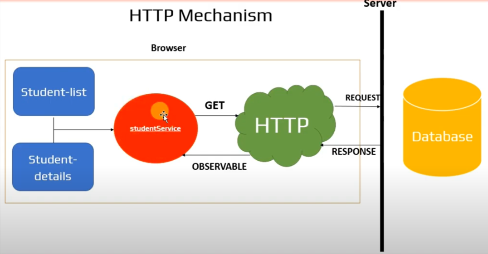

HTTP - Observables
- Previously example in the service files, we use hardcoded data, but in real-time we can't use the hardcoded data.
- In a real-time scenario, data comes from one webserver. So, we must call HTTP requests to the server.
HTTP Mechanism

- An Observable is a sequence of items that arrive asynchronously overtime.
- HTTP call (Request) <-> Single item <-> HTTP response.
- In Angular, an observable is HTTP response which arrives asynchronously.
- But, that incoming HTTP response (observable) is not ready to use in our application.
- So, after receiving the observable we need to convert the incoming response into an ARRAY.
- After conversion into an ARRAY only it is ready to use in our application.
Steps to follow In our Example
HTTP Get request from StudentService.
Receive the Observable and cast it into Student Array.
Subscribe to the Observable from Student-list and Student-Details
Assign the Student Array to the local variable.
NOTE:
RxJS(Reactive Extensions for JavaScript) is an external libray used in Angular to work with Observables.